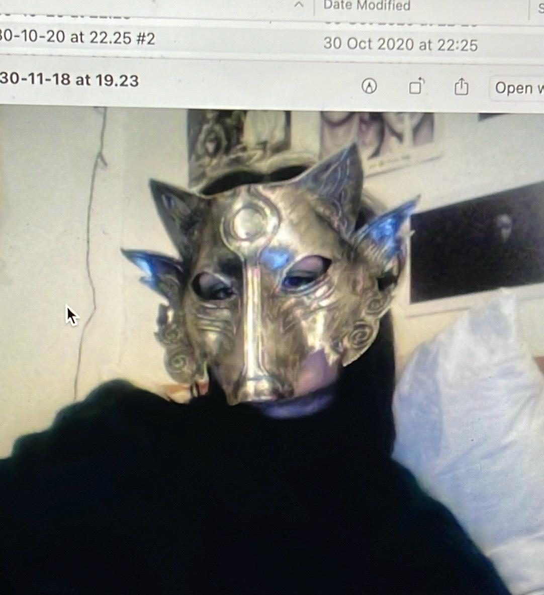

Patrīcija Luiza Broka (2001) ir vizuālo mediju māksliniece un fotogrāfe. Bakalaura grādu ieguvusi LMA Vizuālās komunikācijas specialitātē, ko šobrīd turpina maģistra līmenī, paralēli apmeklējot fotogrāfijas kursus ISSP. Māksliniece aizraujas ar tēmām un materiāliem, kas saistīti ar netveramo. Caurspīdīgumu, gaismas un krāsas mijiedarbību, telpu, slāņiem, atmiņām, tekstūru, un rozā saulrietiem. Viņas darbos bieži parādās putnu un to būru tematika, kas tiek šķetināta gadiem, galvenokārt saistībā ar feminisma tēmām. Visbiežāk izvēlas radīt, izmantojot sietspiedi, foto, projektorus, skenerus, gaismas un ādu.
Patrīcija Luiza Broka (b. 2001) is a visual media artist and photographer. She holds a Bachelor's degree in Visual communication from the Art Academy of Latvia, where she is currently pursuing her Master's degree, alongside studying photography at ISSP. Her artistic practice explores topics and materials connected to the intangible. Transparency, the interaction between light and colour and space that it takes up, layers, memory, texture, and pink sunsets. Birds and their cages are a recurring motif in her work, a theme she continues to study, mainly in reference to feminist topics. Her primary media include screen printing, photography, projectors, scanning, light, and skin/leather.

if you dare :)